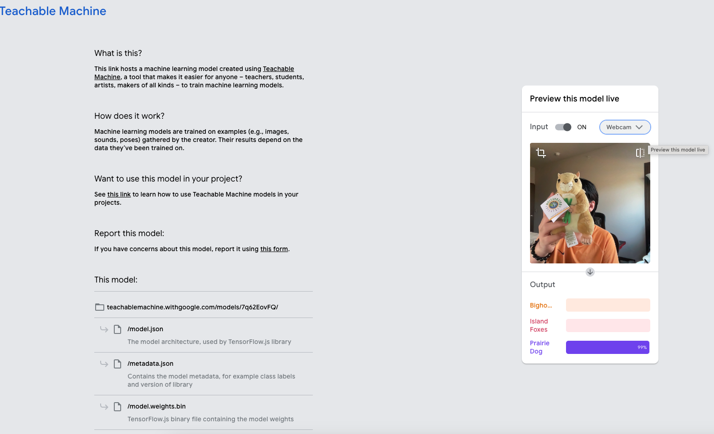

Project Overview
Our project was inspired by a shared passion for national parks and wildlife. As a team of three members who frequently explore national parks, we have always been fascinated by the diverse wildlife we encounter during our adventures. This love for nature served as the foundation for our project idea: utilizing the Teachable Machine platform to create a model capable of classifying three types of wildlife. Through this project, we aimed to leverage technology to enhance the understanding and appreciation of wildlife, while also providing a practical tool for identifying these animals. The project not only reflects our enthusiasm for the natural world but also highlights how machine learning can be used to promote education and awareness in outdoor environments.
Reflections
Working on this project provided first-hand insight into the complexities of developing ethical AI. While we were inspired by Buolamwini’s call for inclusivity, we also grappled with the limitations of our resources. Creating a perfectly unbiased model is nearly impossible, and trade-offs had to be made between fairness, accuracy, and feasibility. Buolamwini’s idea that "AI systems are mirrors of power" resonated deeply as we realized that even small decisions, such as how to label data or which metrics to prioritize, could reinforce or challenge existing power dynamics.
Try Our Model
Click the button below to try our trained machine learning model:
Click Here to Try Our ModelThe Process
Once we selected our 3 objects to train our model with, and had gathered variations of each of the objects, we began the training process. We used a mixture of recorded images using a webcam, making sure to get a variety of angles for each object, as well as a small handful of collected images to ensure our model had a mix of examples to learn from. We found our model needed additional training for a Neutral category, and we chose to train it not only on a neutral background, but also incorporating faces and AI generated human faces; to teach our machine that a face could be "ignored" and to instead focus on the objects it was showed to identify.

Export and Deployment
With the model trained and tested, we could now export it to the cloud hosting by Google, embed in our website, and start to play.
See Our Codes & Weights
Explore the code and model weights behind our project:
View Code & WeightsLearn More from The Coding Train
Watch this video to learn more about creating image classification models with Teachable Machine.